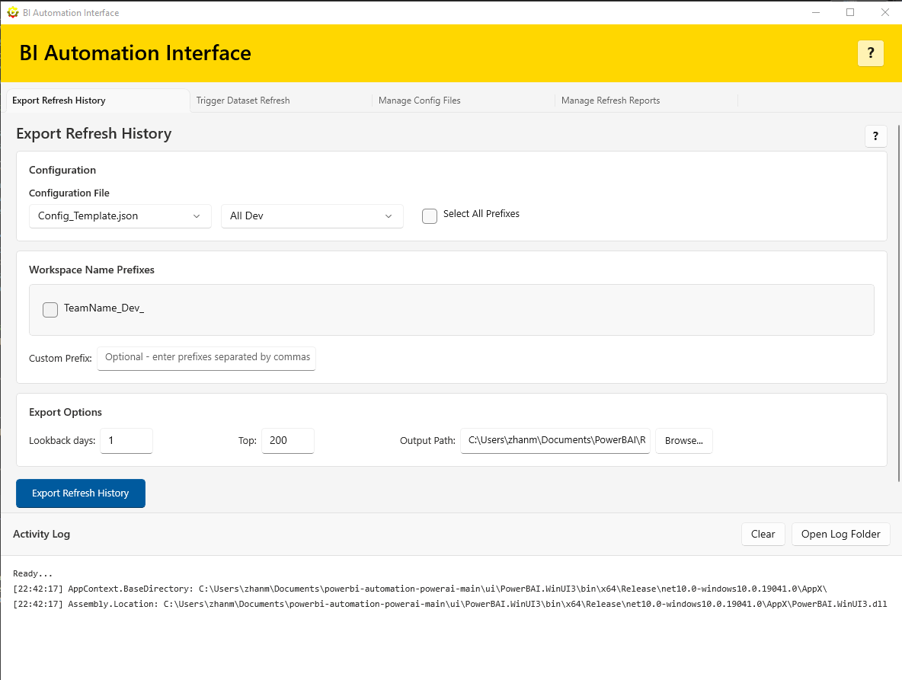
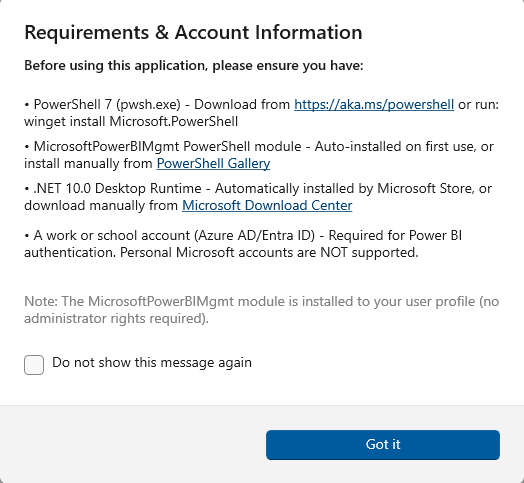

Automate dataset refreshes and quickly identify refresh failures across many workspaces and reports. No admin rights required for daily use.
Sound familiar?

Trigger dataset refreshes across multiple workspaces using workspace name prefixes. Save hours of manual work.
Export HTML + CSV refresh history reports with customizable lookback periods and filtering options.
Run refresh reports to quickly identify failed datasets across many workspaces and reports.
Preview reports, open summary/details CSVs, and keep sample output ready for new users.
Easily manage workspace prefixes with JSON configuration files. Create, edit, and organize your presets.
Manage refresh reports and clean up user-created files only. It does not delete anything from your workspaces or datasets.
Each tab includes a help button with quick guidance on options, output files, and best practices.
Run daily operations without Power BI admin rights. If you can access a workspace dataset and view refresh history in the cloud, you can use the tool.
Automate repetitive tasks and manage multiple workspaces from a single interface.
Uses your Power BI account credentials. All operations run under your own permissions.
Clean, intuitive interface built with WinUI 3. Easy to use for both beginners and experts.

Trigger Refresh Help

Export Refresh Help

Manage Refresh Reports

Report Preview (Browser)

Refresh Report Help

Requirements
Download BI Automation Interface from the Microsoft Store and streamline your Power BI administration today.
Get It Now